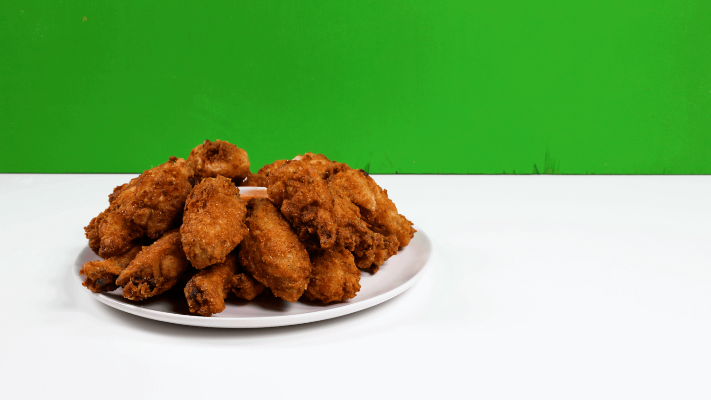

Fried Chicken Recipe

Description
This is a recipe created by the famous rapper and producer, 'Snoop Dog'.
Ingredients
Brine + Chicken:
- 1/3 cup sugar
- 1/3 cup kosher salt
- 1 bay leaf
- 1 tsp red pepper flakes
- 1 orange peel
- 4 pounds chicken wings
Batter:
- 2 cups flour
- 1/4 cup cornmeal
- 1/4 cup crushed potato chips
- 2 tsp garlic powder
- 1 tsp cayenne
- 1/2 tsp baking powde
- 2 tsp black pepper
- 2 tsp salt
- 2 cups buttermilk
- 1 quart canola oil
Instructions
- BRINE: Fill a large pot with 5 cups of water.
Place the pot over high heat and bring to a boil.
Add the sugar, salt, bay leaf, red pepper flakes, and orange peel.
Cook, stirring, until the sugar and salt dissolve, about 1 minute.
Remove from the heat and let cool.
Place the chicken in a large bowl and cover completely with the cooled brine.
Cover and refrigerate for 10 to 12 hours, and up to 24 hours.
Remove the chicken from the brine and pat dry with a paper towel.
Set the chicken aside and discard the brine.
- To batter the chicken: In a large bowl, stir together the flour, cornmeal, crushed potato chips, garlic powder, cayenne, baking powder, black pepper, and salt until combined.
Transfer to a large shallow dish.
Place another large shallow dish next to the flour mixture and add the buttermilk to it.
Place a wire rack or pan next to the two dishes; this will be where you set your battered chicken.
- Take one wing and submerge it in the buttermilk.
Lift and let any excess drip back into the dish.
Roll the wing in the flour mixture, coating it completely.
Place the battered chicken wing on the wire rack or pan and repeat with the remaining wings.
Let the wings dry for 20 to 30 minutes before frying.
- To fry the chicken: In a large Dutch oven over medium heat, heat the canola oil to 350°F.
Place a wire rack over a plate or line a pan with brown paper and set aside.
- Working in batches, carefully add the chicken wings to the hot oil, careful not to crowd, otherwise they'll become greasy.
Once the chicken is added, the oil's temperature will drop to between 300°F to 320°F.
Watch and adjust the heat to maintain a consistent 350°F temperature.
- Fry the wings for 8 to 10 minutes, or until golden.
If the chicken is getting too dark, lower the heat.
Once the chicken is done, remove each piece with tongs and transfer to the prepared rack or pan to drain.
Sprinkle generously
- Fry the wings for 8 to 10 minutes, or until golden.
If the chicken is getting too dark, lower the heat. Once the chicken is done, remove each piece with tongs and transfer to the prepared rack or pan to drain.
Sprinkle generously
Home